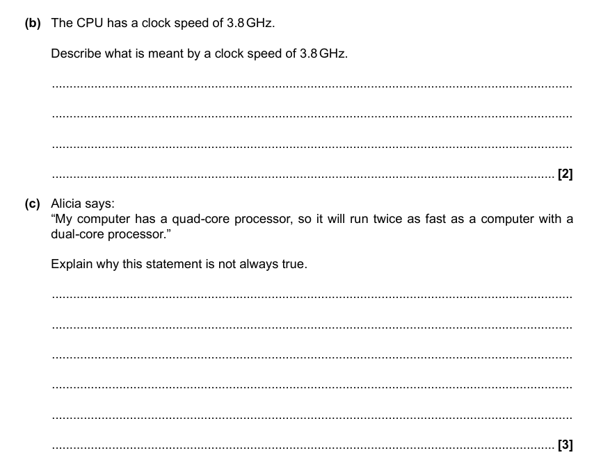
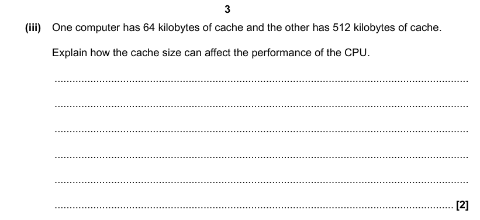
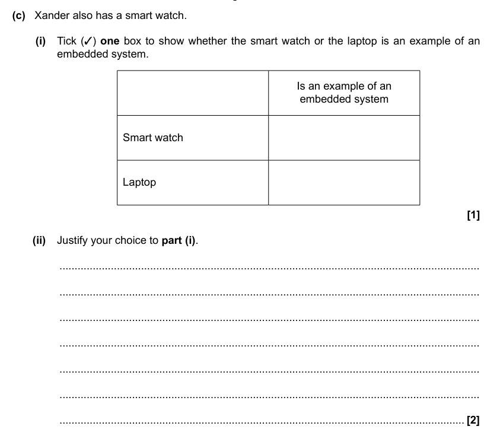

Types Of Computers
By Jeetaditya Chatterjee
Performance Characterists and Embedded systems
Press s for speaker notes
Performance Characteristics of A CPU
Clock Speed
Cores
Cache
Embedded systems
What is an embedded system?
Why is an embedded system?
Questions
Question 1

Question 2

Question 3
